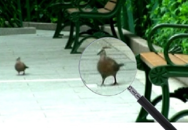

|
Qi Shan
|
I have graduated from the PhD program of the CSE
department of University of Washington, Seattle, supervised by Prof. Brian Curless and Prof. Steve Seitz.
I received my MPhil. degree from CSE department
of the Chinese University of Hong Kong, and a joint Bachelor degree from Fudan University in China and
University College Dublin in Ireland.
My research
interests include computer graphics and vision. I've specialized in 3D reconstruction and computational photography.
I previously worked as an intern on various research projects at Google and Pixar Animation Studios. I have been fortunate to work with Prof. Yasutaka Furukawa, Carlos Hernandez, Tony DeRose, and Mark Meyer.
I am now leading a 3D research and product development team
at Zillow Seattle, working on related computer vision/machine learning problems. Send me an email if you are interested in internships or full-time positions.
Email: shanqi-atmark-cs.washington.edu
|
|
|
Publications
|
Accurate Geo-registration by Ground-to-Aerial Image Matching,
Qi Shan, Changchang Wu, Brian Curless, Yasutaka Furukawa, Carlos Hernandez, and Steven M. Seitz,
3DV 2014, oral presentation.
[Project webpage]
|
|
Photo Uncrop,
Qi Shan, Brian Curless, Yasutaka Furukawa, Carlos Hernandez, and Steven M. Seitz,
ECCV 2014.
[Project webpage]
[A Seattle Times article] |
 |
Occluding Contours for Multi-View Stereo,
Qi Shan, Brian Curless, Yasutaka Furukawa, Carlos Hernandez, and Steven M. Seitz,
CVPR 2014.
[Project webpage]
|
|
|
The Visual Turing Test for Scene Reconstruction,
Qi Shan, Riley Adams, Brian Curless, Yasutaka Furukawa, and Steven M. Seitz,
3DV 2013, oral presentation.
Best Paper Award.
[Project webpage]
|
|
|
Tone Mapping High Dynamic Range Videos using Wavelets,
Qi Shan, Mark Meyer, Tony DeRose, John Anderson,
Pixar Technical Memo #12-01, 2012.
[Project webpage]
|
 |
Refractive Height Fields from Single and Multiple Images,
Qi Shan, Sameer Agarwal, and Brian Curless,
CVPR 2012.
[Project webpage] |
 |
Toward a Visual Pedometer,
Dawei Liu, Qi Shan, and Dan Wu,
SAC 2012. |
|
Seeing through Obscure Glass,
Qi Shan, Brian Curless, and Tadayoshi Kohno,
ECCV 2010.
[Spatially variant non-blind deconvolution executable]
[Project webpage] |
|
Using Optical Defocus to Denoise,
Qi Shan, Jiaya Jia, Sing Bing Kang, and Zenglu Qin,
CVPR 2010.
[Technical report on non-blind deconvolution] |
|
Globally Optimized Linear Windowed Tone-Mapping,
Qi Shan, Jiaya Jia, and Michael S. Brown,
TVCG 2010.
[Download code]
[Project webpage] |
|  |
Fast Image/Video Upsampling,
Qi Shan, Zhaorong Li, Jiaya Jia, and Chi-Keung Tang,
SIGGRAPH
ASIA.
[Project webpage] |
 |
High-Quality Motion Deblurring From a Single Image,
Qi Shan, Jiaya Jia,
and Aseem Agarwala,
SIGGRAPH 2008.
[Project webpage]
[Interactive deblur project page]
[Interactive deblur YouTube link] |
|
Rotational Motion Deblurring of a Rigid Object from a Single
Image,
Qi Shan,
Wei Xiong, and Jiaya Jia,
ICCV
2007. |
Released Software
Spatially variant non-blind deconvolution
HDR Tone-mapping (in Matlab)
Image Upsampling (GPU Enabled)
Video Upsampling
Non-Blind Deconvolution
Single Image Deblur
Contact Info.
Dept. of Computer Science & Engineering
University of Washington
Box 352350, Paul G. Allen Center 378
185 Stevens Way
Seattle, Washington 98195-2350
Email: shanqi-atmark-cs.washington.edu
|
{kind=link}